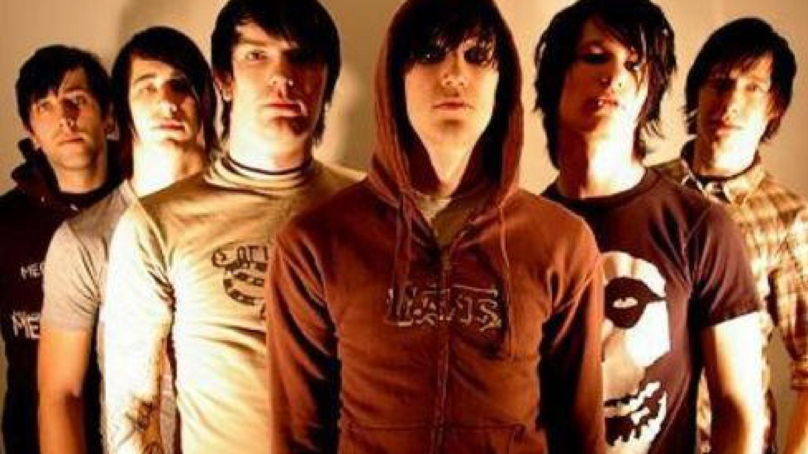
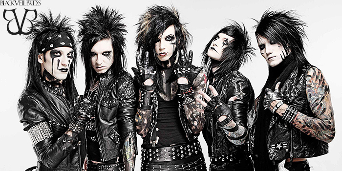
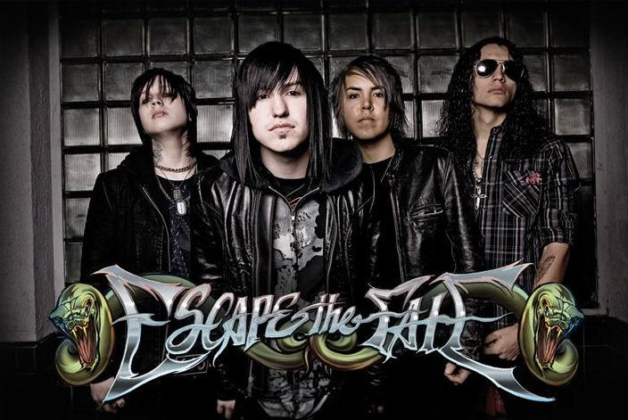
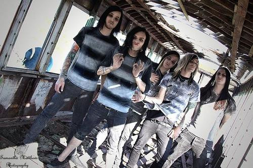

Es un género de música punk rock que mantiene la agresión y la intensidad del hardcore punk pero enfatiza un mayor grado de expresión creativa inspirada inicialmente en el post-punk y el ruido rock . Al igual que el post-punk, el término se ha aplicado a una amplia constelación de grupos. El post-hardcore comenzó en la década de 1980 con bandas como Hüsker Dü y Minutemen . El género se expandió en las décadas de 1980 y 1990 con lanzamientos de bandas de ciudades que habían establecido escenas hardcore, como Fugazi de Washington, DC. Su instrumentación basada en guitarras ruidosas acompañadas por interpretaciones vocales que a menudo son cantadas con susurros y gritos. El género ha desvelado un balance único de disonancia y melodía, en parte canalizando el estilo ruidoso y rápido del hardcore punk en mesuradas y sutiles formas de tensión y descarga. En un comienzo compartía con el hardcore una intensidad y conciencia social con una ética ‘hazlo tu mismo’ pero absteniéndose de la ira desenfocada e imprecisa del punk rock. El género ha sufrido ligeras variaciones durante los últimos años. Una de ellas es que la nuevas bandas de post-hardcore utilizan desgarrados gritos durante toda la canción, en vez de grupos anteriores donde solo se usaban durante unas silabas o palabras, o como mucho en una estrofa.
|  |
| Es una banda estadounidense de post-hardcore formada en Raleigh, Carolina del Norte, el 31 de octubre de 2004. Su formación está compuesta por Shawn Milke (voz, guitarra, teclados), Dennis Lee (Voz), Patrick Thompson (guitarra), Shane Crump (bajo), Jeremy Bryan (batería) y Jake Campbell (guitarra). Destaca su inspiración en la literatura y sus intensas actuaciones en vivo. Alesana utiliza en la mayoría de sus canciones una plataforma de sonido post-hardcore y/o metalcore, acompañada por gritos e interludios melódicos. Es recurrente la utilización de dos voces en un misma pieza de canción, donde se canta simultáneamente en voz limpia y en screaming, aunque también se suele utilizar voces guturales. Destaca igualmente el "control hábil de la dinámica" y el ritmo variable de cada composición musical. Las letras de las canciones son escritas de forma cooperativa por Dennis Lee y Shawn Milke y se inspiran en la literatura. Alesana destaca también por sus intensas actuaciones en vivo. |
| Ambrosia (Album: On Frail Wings of Vanity and Wax) |
|  |
| Es una banda estadounidense de post-hardcore, metal alternativo, con sede en Hollywood, California. El grupo se formó en 2006 en Cincinnati, Ohio, y actualmente está compuesto por Andy Biersack (voz principal), Jake Pitts (guitarra principal), Jinxx (guitarra rítmica, violín), Lonny Eagleton (bajo) y Christian "CC" Coma (batería). Black Veil Brides es conocido por su uso de maquillaje negro, pintura corporal, ropa ajustada con tachuelas negras y cabello largo, todos inspirados en las bandas KISS y Mötley Crüe, así como en otras bandas de glam metal de la década de 1980. Andy Biersack expresó la admiración por parte de los miembros de Black Veil Brides hacia los anteriormente mencionados Mötley Crüe y KISS. En una entrevista con el sitio web Exhibit Gallery, Jake Pitts dijo: «definitivamente Metallica es una de mis influencias. Paul Gilbert y Buckethead han sido mis principales influencias cuando toco solos de guitarra». |
| Knives And Pens (Album: We Stitch These Wounds) |
|  |
| Es una banda de post-hardcore originaria de Las Vegas, Estados Unidos, formada y fundada por Ronnie Radke en el año 2004. Actualmente está integrada por el vocalista Craig Mabbitt, el guitarrista Kevin "Thrasher" Gruft, el guitarrista rítmico Thomas "TJ" Bell y el baterista Robert Ortiz. Las influencias de la banda incluyen: Marilyn Manson, Guns N' Roses, Iron Maiden, Mötley Crüe, Greeley Estates, the Used, Cannibal Corpse, Danzig, Thursday, Linkin Park, Korn, Eminem, Metallica, Blink-182, Journey, Buckcherry, Fall Out Boy, My Chemical Romance, Underoath, System of a Down, DragonForce, Michael Jackson, Queen, Van Halen, Dio, Led Zeppelin, y Aerosmith. Craig Mabbitt ha dicho que se inspira en casi todos los géneros. En estos días, una buena canción es una buena canción, y siempre son influencias, ya sean viejas o nuevas. |
| This War Is Ours (The Guillotine II) (Album: This War Is Ours) |
|  |
| Fue una banda estadounidense de post-hardcore formada en Layton, Utah. Formados en 2008, lanzaron su primer EP, Cheap Tricks and Theatrics en 2009. Su segundo EP, Get Scared fue lanzado en 2010. El álbum de estudio de la banda, Best Kind of Mess , fue lanzado el 12 de julio de 2011. Tiempo despues, en el año 2019, la banda se tomó una pausa. Más tarde, el vocalista Nicholas Matthews declaró que la banda se había separado debido a múltiples problemas entre los miembros de la banda. |
| Sarcasm (Album: Best Kind of Mess) |